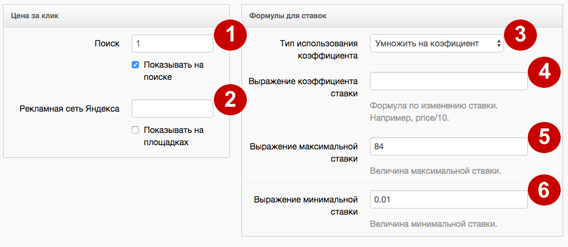
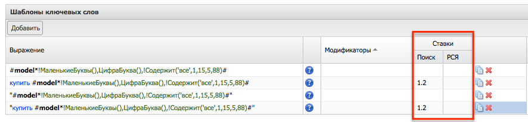

В данный момент сервисы К50:Генератор в процессе переезда на новый дизайн. Данная статья актуальна не для всех клиентов. Если вы не нашли ответ на свой вопрос, обратитесь к старой справке
Цена в интерфейсе K50:Генератора Яндекс.Директ указывается в у.е., вне зависимости от того, какая валюта используется в интерфейсе Яндекс.Директ.
Цена в интерфейсе K50:Генератора Google Adwords указывается в валюте аккаунта.
Для настройки ставок перейдите на одноименную вкладку «Ставки».
Обратите внимание
Обращаем ваше внимание на то, что при отправке ставок в у.е. на рублевые аккаунты, Яндекс.Директ выставляет ставку за вычетом НДС. То есть при выставлении ставок в K50:Генератор ставку надо рассчитать по формуле:
Ставка в у.е. в K50:Генераторе =(Ставка в руб. для Яндекс.Директ)*1.18/30

Цены за клик
Необходимо указать ставку для показа на поиске Яндекса. Ставка будет применяться в том случае, если поставлена галочка “Показывать на поиске”:
Необходимо указать ставку для показа на тематических площадках Яндекса. Ставка будет применяться в том случае, если поставлена галочка “Показывать на площадках”.
Формулы для ставок
Поле имеет два возможных значения:
-
умножить на коэффициент — при выборе этого значения ставка, указанная в поле «Поиск» и в поле «Рекламная сеть Яндекса», будет умножена на значение из поля «Выражение коэффициента ставки».
-
приравнять к коэффициенту — при выборе этого значения ставка, указанная в поле «Поиск» и в поле «Рекламная сеть Яндекса», будет заменена на значение из поля «Выражение коэффициента ставки».
В данном поле можно прописать:
-
числовой коэффициент;
-
rulevalue — в этом случае ставка будет умножаться или заменяться значением из поля «Значение для предложений» из Правила.
{kind=link}
Обратите внимание
Если вы указываете через значение основной ставки из фида bid, то его нужно обязательно взять в квадратные скобки: [bid]
Значение, которое не должна превосходить ставка по всем ключевым словам. Данное поле может иметь числовое значение или выражение, но максимум не может быть больше 84 y.e.
Значение, меньше которого не должна быть установлена ставка по всем ключевым словам. Данное поле может иметь числовое значение или выражение, но оно не может быть меньше 0.01 y.e.
Обратите внимание, что коэффициент на ставку можно также указать на вкладке «Ключевые слова» в поле «Ставки - Поиск» и «Ставки - РСЯ».

Если на уровне ключевых слов указаны коэффициенты, то итоговая ставка будет получена в результате умножения на этот коэффициент.
Итоговая ставка будет рассчитана по формуле:
(Ставка на Поиске * Выражение коэффициента ставки * Индивидуальный коэффициент на Ключевых словах) и ограничена значениями Выражения максимальной ставки и Выражением минимальной ставки.